ЧТО ТАКОЕ
«ОСТАНОВКА»?
«Остановка» — это курорт,
где не нужно выбирать один способ
отдыха. Здесь каждый маршрут ведёт
в своё состояние: к морю,
в горы, на спектакль, концерт
или в тихое место с книгой.
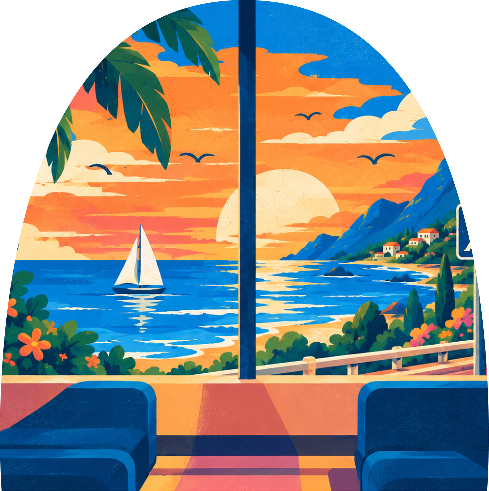
КАК ЭТО РАБОТАЕТ?
Четыре простых шага к отдыху, который нужен именно тебе.
Выбери остановку
Найди направление,
которое откликается
сейчас.
Сядь на маршрут
Мы подскажем, что
посмотреть, послушать
и попробовать.
Переключись
Погрузись в атмосферу
и позволь себе другой
ритм.
Остановись
Почувствуй, как это —
быть здесь и сейчас.
ВЫБЕРИ СВОЮ ОСТАНОВКУ
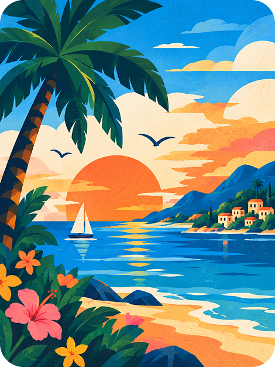
МОРЕ
Солнце, вода и маршрут
без обратного билета.
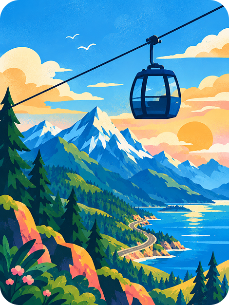
ГОРЫ
Подняться выше привычного.
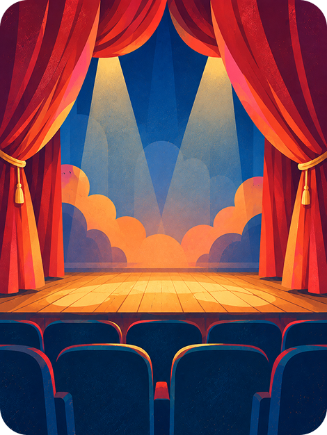
ТЕАТР
Истории, в которых можно стать кем-то другим.
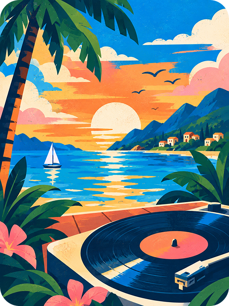
МУЗЫКА
Остановка, где всё звучит иначе.
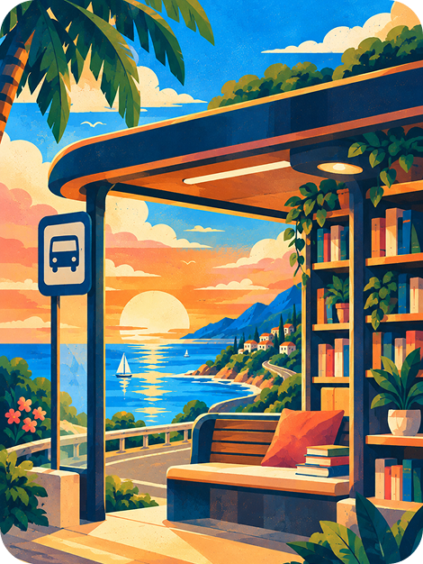
ТИШИНА
Для тех, кому некуда спешить.
ФИЛОСОФИЯ ПРОЕКТА
Мы верим, что отдых — это не пункт
назначения, а часть пути. Иногда нужно
свернуть с привычного маршрута,
чтобы услышать себя, вдохновиться, увидеть
новые горизонты и вернуться с новыми
силами.
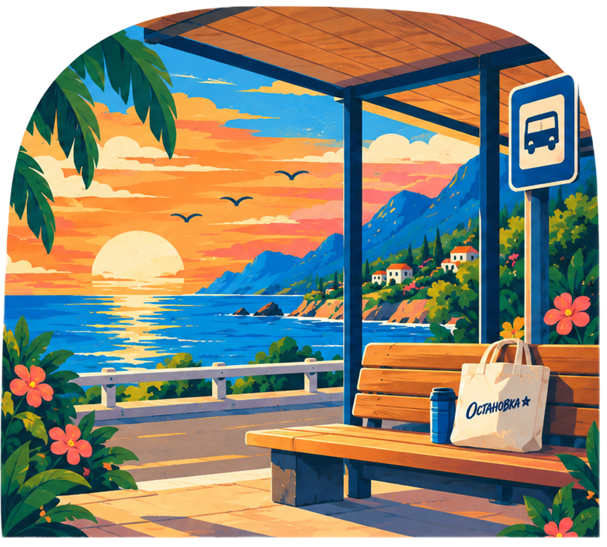
ИСТОРИЯ
ПРОЕКТА
Как простая мысль
превратилась в целую
карту направлений.
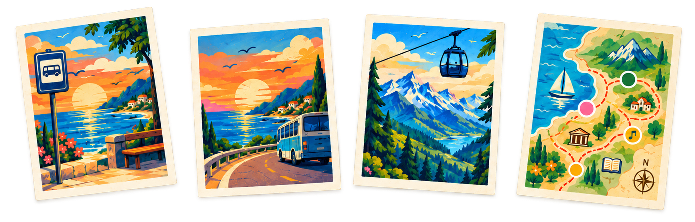
Первая остановка
Всё началось с идеи: почему остановка не может стать местом отдыха?
Первый маршрут
Так появилась остановка у моря — место, где дорога стала частью отдыха.
Новые направления
Потом появились горы,
театр, музыка
и библиотека.
Сегодня
Теперь «Остановка» — это целая карта маршрутов, где каждый выбирает свой способ переключиться.
СОБЫТИЯ
НА ОСТАНОВКАХ
Музыка на закате, книжные вечера, ночные показы и маршруты в горы.
Каждая остановка — это не только место, но и событие,
которое делает отдых особенным.
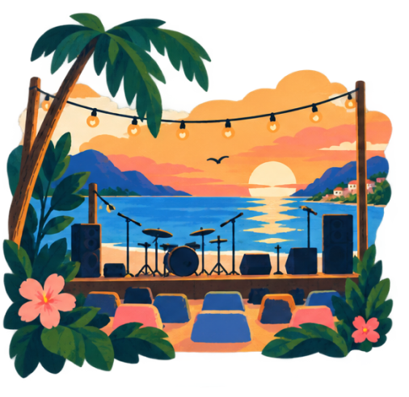
12 АВГ
Музыка на закате
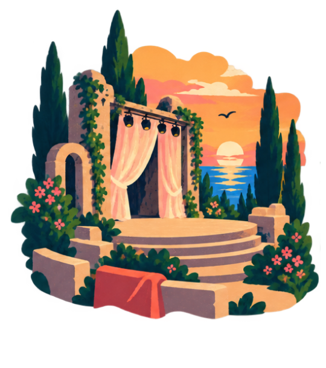
18 СЕН
Летний спектакль
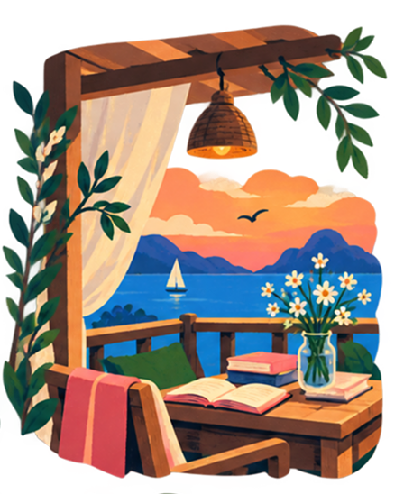
21 ОКТ
Книжный вечер
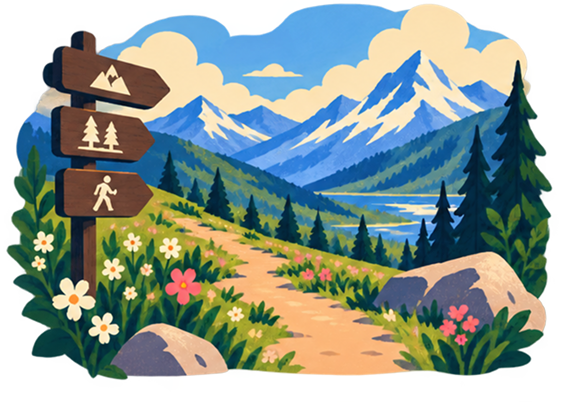
27 НОЯ
Поход в горы
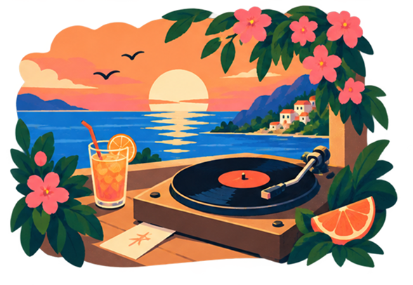
2 ДЕК
Винил и закат
МЕРЧ
Маршруты, знаки и маленькие
воспоминания о путешествии —
теперь не только на остановках.
Забрать «Остановку»
с собой
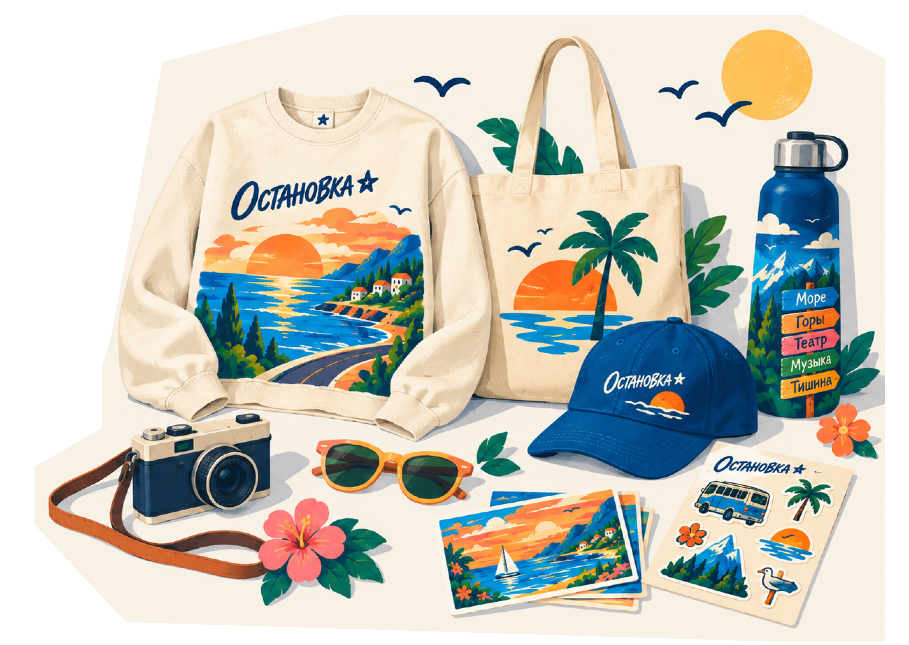
БИЛЕТ ДО ОТДЫХА
УЖЕ У ТЕБЯ
Осталось только выбрать момент,
чтобы выйти из привычного маршрута
и отправиться в своё направление.
остановка
уже рядом
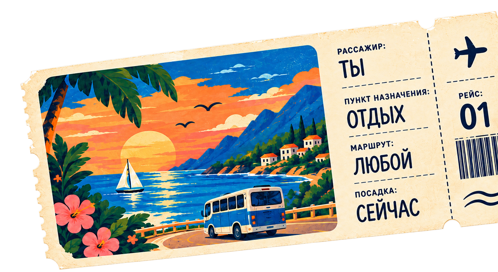